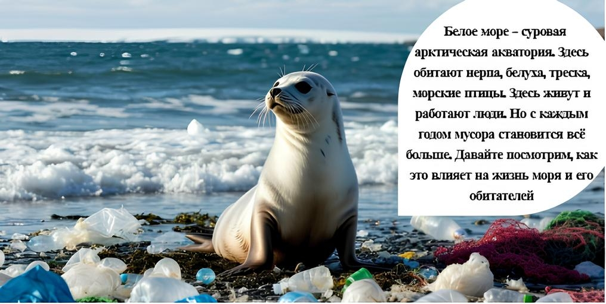
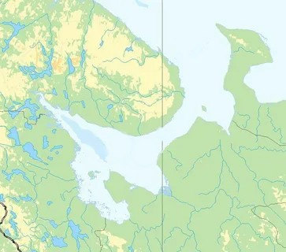
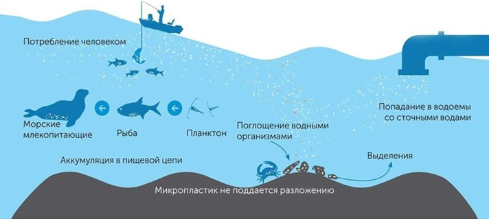

Слой мусора в воде

Под поверхностью — взвесь пакетов, нитей и фрагментов. «Пластиковый суп». До 94% мусора находится в толще воды.


250–1700 ед/час | пластик 59,6%
520–2350 ед/час | пластик 59,6%
Пластик 59,6% · древесина 27,7% · бумага 8,5%
Главный источник загрязнения: Агломерация Архангельск — Северодвинск — Новодвинск
Главные реки-транспортировщики: Северная Двина и Онега
Главный тип мусора: Пластик - 59,6% от всего антропогенного мусора

Микропластик (<5 мм) проходит через зоопланктон, рыб, тюленей — и попадает в человека.
Нажми на фото для увеличения
Под поверхностью — взвесь пакетов, нитей и фрагментов. «Пластиковый суп». До 94% мусора находится в толще воды.

Кольчатая нерпа, белуха, гаги, треска — сотни особей гибнут от сетей, пакетов и микропластика ежегодно.

Собранные предметы